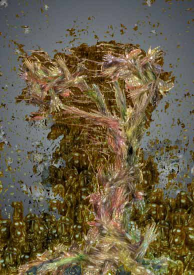

Afanassy Pud
COMPUTER GRAPHICS
NOTES
Afanassy Pud was born in Leningrad (now St. Petersburg) in 1951 and lives there now. He is a graduate of the Leningrad Poytechnic Institute. His art has been exhibited in Moscow, Riga, Berlin and is included in private collections worldwide. During the Soviet era his work was characterized as politically incorrect, if not subversive, and was frequently censored by the authorities and the KGB.
MOCA's contributing editor JD Jarvis reviews Anfanassy Pud's graphic art
Includes statement by the artist
JD Jarvis review of Afanassy Pud's MOCA exhibit
Wind
|
 |
This image included in JD Jarvis's MOCA tour
Click for tour
The Art Lover's Guide to Digital Art
Click for JD Jarvis's main essay